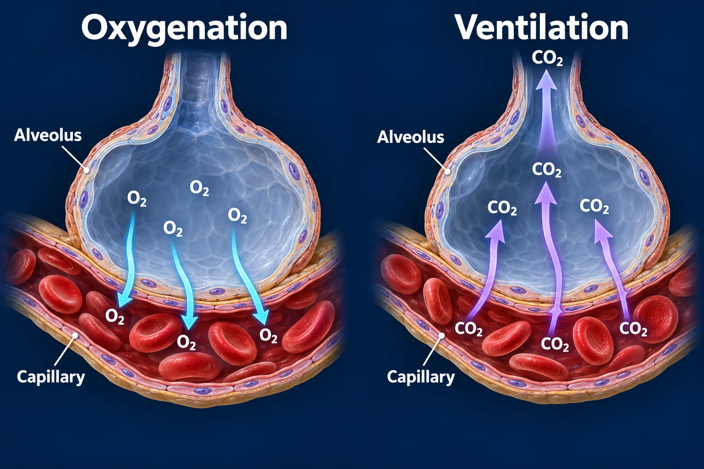

ABSN STUDY HUB · VISUAL STUDY CARD
Acute respiratory failure, type I versus type II

Course labels and notes from the original graphic, arranged into readable sections. The illustration is schematic.
Course overview
RESPIRATORY FAILURE IS A NUMBER, NOT A DISEASE
- The lungs do two jobs: get oxygen IN and get carbon dioxide OUT. Which one has failed decides what you do.
TYPE I — OXYGENATION
- the problem is getting O₂ IN
The gauge
- PaO₂, dial from 30 to 110
- Failure line at 60 — this patient reads 48 mmHg, below it
Why
- Blood is passing alveoli that are collapsed, flooded or blocked, so it picks up nothing.
CAUSES
- pneumonia · ARDS · pulmonary odema · pulmonary embolism · atelectasis
What it needs
- Support the failing job: oxygen, PEEP, open the alveoli back up.
TYPE II — VENTILATION
- CO₂ will not come OUT
The gauge
- PaCO₂, dial from 20 to 90
- Failure line at 50 — this patient reads 64 mmHg, above it, with pH under 7.35
Why
- She is simply not moving enough air.
CAUSES
- COPD exacerbation · opioid overdose · Guillain-Barré · myasthenic crisis · trauma
What it needs
- Support the failing job: ventilate her. BiPAP, or intubation.
⭐ THE EARLIEST SIGN IS NOT THE SATURATION
- It is RESTLESSNESS and CONFUSION. A brain short of oxygen gets agitated before anything shows on a monitor — and the saturation probe is the last thing to tell you.
💡 Many patients have both types at once. A COPD exacerbation is the classic mixed picture.